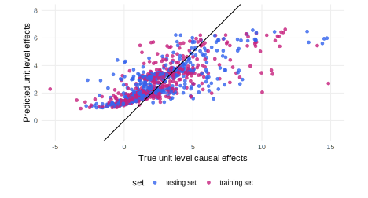
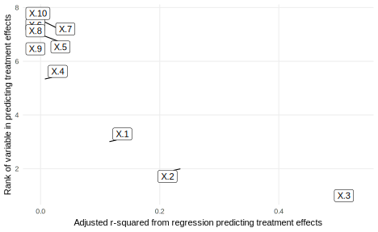
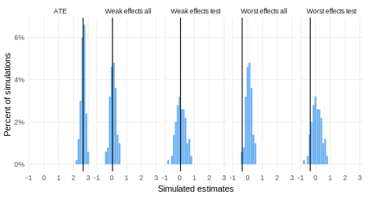

library(rdss) # for helper functions
library(grf)
covariate_names <- paste0("X.", 1:10)
f_Y <- function(z, X.1, X.2, X.3, X.4, u)
z * X.1 + z * X.2 ^ 2 + z * exp(X.3) + z * X.3 * X.4 + u
get_best_predictor <-
function(data) select(data, estimate = var_imp) |> slice(1)
declaration_19.1 <-
declare_model(
N = 1000,
X = matrix(rnorm(10 * N), N),
U = rnorm(N),
Z = simple_ra(N)) +
declare_model(
Y_Z_1 = f_Y(1, X.1, X.2, X.3, X.4, U),
Y_Z_0 = f_Y(0, X.1, X.2, X.3, X.4, U),
tau = Y_Z_1 - Y_Z_0) +
declare_inquiry(handler = best_predictor,
covariate_names = covariate_names,
label = "best") +
declare_measurement(Y = reveal_outcomes(Y ~ Z)) +
declare_measurement(
handler = causal_forest_handler,
covariate_names = covariate_names,
share_train = 0.5
) +
declare_measurement(
handler = fabricate,
low_test = (test & (pred < quantile(pred[test], 0.2))),
low_all = pred < quantile(pred, 0.2)
) +
declare_inquiry(
ate = mean(tau),
worst_effects_all = mean(tau[tau <= quantile(tau, 0.2)]),
worst_effects_test = mean(tau[test & tau <= quantile(tau[test], 0.2)]),
weak_effects_all = mean(tau[low_all]),
weak_effects_test = mean(tau[low_test])) +
declare_estimator(Y ~ Z, inquiry = "ate") +
declare_estimator(Y ~ Z, subset = low_test,
inquiry = c("weak_effects_test", "worst_effects_test"),
label = "lm_weak_test") +
declare_estimator(Y ~ Z, subset = low_all,
inquiry = c("weak_effects_all", "worst_effects_all"),
label = "lm_weak_all") +
declare_estimator(handler = label_estimator(get_best_predictor),
inquiry = "best_predictor", label = "cf") 19 Complex designs
In the designs we presented thus far, the aim was generally to learn about the level of some variable or some particular causal effect. In most cases, a single set of data was collected and an answer strategy was applied directly to the data to generate an answer to a causal or descriptive inquiry.
Very few published studies have this actual form. Instead, most draw in complex ways on a series of research designs, each targeted to a different inquiry, that when brought together answer the deeper theoretical question at the heart of the research. Most published studies are complex in this way.
But studies can also be “complex” in other ways. For instance, although we have assumed researchers start with well defined inquiries, some studies focus on first figuring out what question to ask and then proceed to ask and answer it. The study engages first in model building, then reports the results of a follow-on research design targeted at questions posed by the new model.
Some studies seek not to learn about levels and effects but search explicitly for a model of a phenomenon, asking for instance “what causes \(Y\)?” or “what model, in some class, best accounts for observed data”? These studies have complex inquiries. Other studies have complex data and answer strategies, for instance, mixing qualitative and quantitative inference strategies or gathering together findings from multiple sub-studies in order to arrive at an overall conclusion.
19.1 Discovery using causal forests
We declare a design in which a researcher examines a large set of continuous covariates to discover (i) which covariate best explains heterogeneity in the effects of a treatment and (ii) which subjects experiences the weakest or strongest effects. The design declaration clarifies the inquiries when the goal of the study is discovery and can be used to guide design decisions regarding how best to split data into training and testing sets.
In most designs that we have discussed, researchers have a clear idea what they are looking for when they begin the research. How big is some population? What is the size of some effect? But some research involves questions that are much more open in nature. We focus here on discovery research that has two types of more open questions. The first inquiry poses an open question of the form “what matters?” (rather than the more common closed question of the form “what is the effect of this on that?”). The second inquiry poses a question about an as-yet unspecified group — who are the people for whom effects are especially strong or weak?
We imagine a setting in which a researcher has access to a large group of covariates \(X\) and has conducted an experiment to assess the effects of \(Z\) on \(Y\). The researcher is interested in the heterogeneity of effects of \(Z\) as a function of variables in \(X\) and in poses two inquiries. First, which covariate in \(X\) best “explains” variation in the effect of \(Z\)? Second, what combination of values in \(X\) characterize individuals for whom effects are particularly weak?
Declaration 19.1 proceeds as follows.
For the model, we imagine a possibly complex function linking \(Z\) to \(Y\) in which the effect of \(Z\) depends nonlinearly on some but not all variables in \(X\). As always, this model can and should be altered to help understand whether diagnosis depends on the particular type of structure assumed.
We declare two inquiries beyond the standard average treatment effect. For the first inquiry we need to be specific about what we mean by “best explains.” We will imagine asking which covariate \(X\) produces the lowest conditional variance \(\mathbb{E}(\mathbb{V}(Y_i(1)- Y_i(0)|X_i = x))\). Specifically, we partition each covariate into quantiles and take the average variance in treatment effect across each quantile. We will call this the best_predictor inquiry and calculate it using the \(R^2\) from a fixed-effects model applied to the true treatment effects. The best_predictor function in rdss calculates this estimand, dividing covariates into 20 quantiles by default.
There is both a simple and a more complex understanding of the second inquiry. The simple understanding is that we are interested in the average effect among the units whose effects are in the bottom 20% (say) of all effects. We will call this the worst_effects inquiry. This is a natural notion of the worst affected. But it is a very difficult quantity to estimate.
The more complex understanding involves examining the realized data to do our best to identify a set of units (say of size 20%) that we think will have weak effects, and with this set identified return to M and ask what is the average effect for this set. We will call this the weak_effects inquiry, to acknowledge the fact that the effects for this group may not be the worst effects. This data-dependent inquiry is more complicated to articulate theoretically, but it is more straightforward to estimate empirically.
We assume the data strategy is the same as for a simple two arm trial (see Section 18.1).
This causal forests design gets its name from the answer strategy. The “causal forests” algorithm randomly partitions data into a training and testing group. Within the training group it repeatedly generates “trees” by repartitioning the covariates (generating “branches”) to identify subgroups (“leafs”) with similar treatment effects. At each step, partitioning is implemented to yield estimated minimum variance in treatment effects. Unit level predictions of treatment effects (in both the training and the testing sets) are then generated by combining estimates of effects for units over different trees (see Wager and Athey 2018 for full details of the approach). Our estimate of the best_predictor is based on the variable that is most frequently partitioned to reduce variance, though we note that this indicator was not designed to capture the variable that induces the greatest reduction in variance. Including it here allows us to illustrate the ability of diagnosis to assess the performance of an estimator for a task for which it was not designed.
To implement causal forests in DeclareDesign, we wrote a “handler” that calls a function from the grf (generalized random forests) package. This handler produces two types of quantities: estimates of unit level causal effects and the name of the variable that is most frequently partitioned to reduce variance (var_imp). Because the output includes a prediction for each unit it is natural to add the output to the primary data frame. For that reason, the causal forests estimation is introduced as data strategy step and not specifically in an answer strategy step. The estimates of the unit level causal effects are used in order to identify the weakly performing group (within the test set and within the full set) which is in turn used to calculate the two versions of the weak_effects estimands, one for the test set and one for the full sample. To accommodate these complexities, the final inquiry declaration takes place after the implementation of the causal forests algorithm.
Finally, we use regression to estimate the ATE as well as the weak effects and worst effects estimands using both the identified low performing group in the test set data and the identified low performing group in the full data. We assess the performance of these against both the weak_effects inquiry and the worst_effects inquiry.
Declaration 19.1 Random forests design
Before turning to diagnosis we can get a feel for the performance of the causal forest estimator by comparing the predicted effects for each unit generated by the estimator, with the actual unit level treatment effects generated by M, as shown in Figure 19.1.

We see that we get some traction — but we also get a lot wrong. Estimating unit level causal effects is hard. We see in particular that that the range of the predictions is narrower than the range of the true effects, which will mean that the average effects in the groups with the best or worst predicted effects will generally not be the same as the effects for the groups with the best and worst actual effects.
To see how the design is choosing the best predictor, we illustrate the adjusted r-squared for a regression predicting the treatment effect with a partitioning of each variable, as well as the rank of predictors given the r-squared number in Figure 19.2. We see that the third covariate X.3 has a very high adjusted r-squared, and is ranked first, and most of the covariates are bunched at a very low r-squared.

Diagnosis 19.1 Causal forests diagnosis
For the diagnosis we need to take account of the fact that the answers to one of the inquiries (“Which X accounts for the most variation in effects?”) should be treated as categorical. For this reason, we report the modal estimate and estimand, rather than relying on the average estimate and average estimand. We calculate the probability that we get the correct answer, rather than relying on bias. We illustrate the diagnosis in Figure 19.3.
most_common <-
function(x) {
ux <- unique(x)
ux[which.max(tabulate(match(x, ux)))]
}
discovery_diagnosands <-
declare_diagnosands(
correct = mean(estimate == estimand),
bias = mean(estimate - estimand),
rmse = sqrt(mean((estimate - estimand)^2)),
mean_estimate = mean(estimate),
modal_estimate = most_common(round(estimate, 1)),
mean_estimand = mean(estimand),
modal_estimand = most_common(round(estimand, 1))
)
diagnosis_19.1 <-
diagnose_design(declaration_19.1,
diagnosands = discovery_diagnosands) 
We see that we do very well in identifying the most powerful predictor of heterogeneity, correct nearly all of the time. (We are never “correct” for the continuous estimands, but we would never expect to be.) Our estimator for the effects for the weak group within the testing set is unbiased. This follows from the fact that we are in essence estimating the causal effect within a subgroup that has been selected without knowledge of their potential outcomes. Substantively the effects for this group are indeed considerably lower than the average treatment effects and so we have been successful in identifying units that experience weak effects on average and estimating the effects for these. Thus we have been successful for a version of both inquiries.
The other diagnoses sharpen our understanding of what questions cannot be so easily answered with this design. First we see that estimates of the effects for the weak performers do not do a good job of estimating effects for the worst performers. This highlights that the procedure can generate unbiased estimates for a group that does poorly but not the group that does most poorly. We can further see from the diagnosis that while we recover effects for the test group well, we have some bias when trying to estimate the effects for the weak performing set in the combined training and test data data. The reason for bias here is that training group units enter the worse performing set in part because of their realized outcomes (which helped define the set) and not just on the basis of pre-treatment features. The bias is small however—so small it is barely discernible in the histograms—and so the restriction of analysis to the training set only ultimately increases mean squared error here.
Overall the approach fares well and through diagnosis we get clarity over which quantities are well estimated. Modifications of this design can help us assess how sensitive performance is to types of stipulated models and choices about train-test splits.
19.1.1 Design examples
Bauer and Hohenberg (2021) uses a causal forests algorithm to explore the heterogeneous effects of a manipulation of the source (real or fake) of a political news. The average effect of a real (versus fake) source on belief in the facts reported in the article is positive, and it is more positive for those with greater trust in media and more political knowledge.
Green et al. (2022) study the effects of messages designed to increase vaccine intentions with a survey experiment. They apply a causal forests algorithm to uncover the possibly heterogeneous effects of the treatment depending on observed covariates like income, local disease burden, and political ideology, but find that responses to treatment are mostly homogeneous.
19.2 Structural estimation
We declare a design in which a researcher wants to use experimental data to estimate the parameters of a game theoretic model. The premise of the approach is that, to the extent that the model is correct, in-sample parameter estimation allows the researcher to make interesting external inferences to effects in other settings. The risk is that bad models will produce bad inferences.
Structural estimation is used when researchers have in mind a model for how processes work and their goal is to estimate the parameters of that model. If only they knew the parameters of the model, they could draw inferences about levels of unobserved variables, treatment effects, or other quantities. They might even extrapolate to estimate counterfactual quantities, such as the effects of interventions that have not been implemented (Reiss and Wolak 2007).
We illustrate this design with a bargaining game, drawing on an example used in Wilke and Humphreys (2020). We imagine a customer \(i\) makes payments from some endowment to a taxi driver. Bargaining proceeds as one player makes an offer that is accepted or rejected; if rejected the other player makes a counteroffer. The game continues for \(n\) rounds with zero payoffs if no deal is agreed. Our main interest is the share of the endowment retained by the customer.
In Declaration 19.2, we imagine two types of customers, strategic (\(\theta_i = 0\)) and nonstrategic (\(\theta_i = 1\)). If a customer is strategic, the equilibrium offer made by the first mover is the one predicted by the solution given in Rubinstein (1982). If however, the player is nonstrategic then they always (successfully) insist on invoking a payment norm that lets them retaining a fixed share of their endowment, \(\tilde{\pi}\). We let \(\alpha\) denote the probability that a player is nonstrategic. A player’s payoff then is given by:
\[\pi_i = (1-\theta_i)(z_i\hat{\pi} + (1-z_i)(1-\pi)) + \theta_i\tilde{\pi}\]
where \[\hat{\pi} = \sum_{j = 2}^n(-1^{j})\delta^{j-1}\]
is the Rubinstein solution. The customer’s payoff depends on whether they goes first (\(z_i = 1\)) or second (\(z_i = 0\)) and on the common discount factor \(\delta\).
One complication with structural estimation is that it’s hard to know what to infer when an action is taken that the model says shouldn’t happen – suppose negotiations didn’t reach \(\tilde{\pi}\) when they should have. A common way to address this challenge is to allow for the possibility that implemented actions are noisy reflections of predicted actions; noisy either because of measurement error or because in fact players deviate randomly from optimal behavior. Here we will allow for a disturbance like this by assuming that measured payments, \(y\), are a random draw from a Beta distribution with expectation given by the expected payment \(\pi\) and variance \(\kappa\).
In our data strategy, we randomly assign \(Z\) (who goes first) and measure payments \(y\). We will also assume we know what norms nonstrategic players are following, specifically that \(\tilde{\pi} = 0.75\). Our goal is to use observed payments along with treatment allocation to estimate the model parameters, \(\alpha\), \(\delta\), \(\kappa\). These in turn can be used to estimate treatment effects and other counterfactual quantities (if we assume the model is true).
Our inquiries are the parameters k, d, and a (corresponding to \(\kappa\), \(\delta\) and \(\alpha\)). We set up the design so that we can vary these features easily but also so that we can vary \(n\) (the total number of rounds in the bargaining game).
The answer strategy is implemented using maximum likelihood to identify which parameter values are most consistent with the data. More specifically this approach takes the model as true and asks for what collection of parameter values is the observed data most likely. See King (1998) for an introduction to the method of maximum likelihood. One nice feature of the method is that the problem of maximizing the likelihood is (asymptotically) equivalent to finding the probability distribution that minimizes the Kullback–Leibler divergence to the true probability distribution (of course, all that within the class of distributions that can be specified under the model). For more see White (1982).
The heart of the estimation strategy is the specification of likelihood function. The likelihood function reports the probability of the data given particular stipulated values of the parameters. This value is different depending on \(n\) so in fact we write down a function that writes a function given \(n\). The likelihood function reflects the theoretical model described above, which means that in this declaration, the same event generating process is used in M and in the construction of the likelihood function in A. An optimistic assumption.
Declaration 19.2 Structural estimation declaration
With the likelihood function defined, we can declare a design with an estimation step that uses the bbmle package
library(bbmle)
# Equilibrium offers for a game of length n
offer <- function(n, d){
sum(sapply(2:n[1], function(t) ((-1)^t)*(d^{t-1})))
}
# Likelihood function
likelihood <- function(n){
function(k, d, a) {
m <- Z * offer(n, d) + (1 - Z) * (1 - offer(n, d))
R <- a * dbeta(y, k * .75, k * .25) +
(1 - a) * dbeta(y, k * m, k * (1 - m))
return(-sum(log(R)))
}
}
n <- 2 # Number of rounds bargaining (design choice)
delta <- 0.8 # True discount factor (unknown)
kappa <- 2 # Parameter to govern error in offers (unknown)
alpha <- 0.5 # Share of behavioral types in the population (unknown)
declaration_19.2 <-
declare_model(
# Define the population: indicator for behavioral type (norm = 1)
N = 200,
type = rbinom(N, 1, alpha),
n = n) +
declare_inquiry(kappa = kappa,
delta = delta,
alpha = alpha) +
declare_assignment(Z = complete_ra(N)) +
declare_measurement(
# Equilibrium payoff
pi = type * .75 +
(1 - type) * (Z * offer(n, delta) + (1 - Z) * (1 -offer(n, delta))),
# Actual payoff (stochastic)
y = rbeta(N, pi * kappa, (1 - pi) * kappa))+
# Estimation via maximum likelihood
declare_estimator(.method = mle2,
minuslogl = likelihood(n),
start = list(k = 2, d = 0.50, a = 0.50),
lower = list(k = 0.10, d = 0.01, a = 0.01),
upper = list(k = 100, d = 0.99, a = 0.99),
method = "L-BFGS-B",
term = c("k", "d", "a"),
inquiry = c("kappa","delta", "alpha"),
label = "Structural model") Diagnosis 19.2 Structural estimation diagnosis
diagnosis_19.2 <- diagnose_design(declaration_19.2) | Inquiry | Mean Estimand | Bias | RMSE |
|---|---|---|---|
| alpha | 0.50 | -0.00 | 0.08 |
| (0.00) | (0.01) | (0.01) | |
| delta | 0.80 | 0.00 | 0.03 |
| (0.00) | (0.00) | (0.00) | |
| kappa | 2.00 | 0.07 | 0.26 |
| (0.00) | (0.03) | (0.02) |
Turning to diagnosis we see first that we do a good job in recovering parameter values. All three parameters are estimated precisely. From these, we can calculate estimates of causal quantities such as the first mover advantage and assess the extent to which this depends on features such as the length of the game.
As always, diagnosis can be used to fine-tune designs. In Figure 19.4, we compare design performance as we vary \(\alpha\) and \(n\). We see from the comparison of designs that estimates are less accurate when either longer games are used or when there are many nonstrategic players. Shorter games have an advantage here of producing a more pronounced difference in the payoffs of first and second movers. The gains from shorter games are especially pronounced in settings in which many nonstrategic players dampen the variation in payoffs. Though not shown here, it we can also use design diagnosis to show that the design fails if we set \(n\) at 3 (for instance) as in this case \(\delta\) is not identified (the same probability distribution is consistent with different values for \(\delta\)).

The basic structure used here can be used for a wide range of structural models. The first step is to write down the theory well enough to specify the implied likelihood function. Doing so might require adding noise to the model so that the data that are seen in practice can be seen in theory. The next step is to estimate the model parameters that have the greatest likelihood of having producing the observed data. (The same fundamental approach can be used with estimation via Bayesian methods or methods of moments.)
The payoffs from structural estimation can be great: we can operationalize our theoretical models to make specific real-world predictions by disciplining them with real-world information. The risks are large too. Because the inferences are necessarily model dependent, model misspecification can lead to faulty conclusions. When doing structural estimation, apply Principle 3.2: Design agnostically liberally.
19.2.1 Design examples
Samii (2016) enumerates some examples of structural estimation in economics and predicts future political scientists will take to structural estimation in earnest.
Francois, Rainer, and Trebbi (2015) provides a structural model to explain how leaders allocate cabinet positions to bolseter coalitions; the analysis compares the performance of a preferred theory to rival theories.
Frey, López-Moctezuma, and Montero (2022) estimates a structural model of party competition and coalitions on the basis of a regression discontinuity design. With the model parameters estimated, the authors simulate counterfactual scenarios without party coalitions.
19.3 Meta-analysis
We declare a design for meta-analytic study in which a researcher seeks to combine findings from a collection of existing studies to form an overall conclusion. Declaration helps clarify the estimand in such studies. Diagnosis highlights risks associated with a common estimator used in meta-analysis, the fixed effect estimator.
In a meta-analysis, inquiries are typically population-level quantities like the population average treatment effect (PATE). The relevant population might be the full set of units that happened to participate in past research studies or it might be a broader population, like all human adults since 1950. The data strategy for a meta-analysis involves collecting all (or a subset) of the estimates generated by past research studies on the topic and standardizing them so they can be meaningfully compared or combined. Meta-analyses are valuable because they can tell us about the empirical consensus on a particular inquiry. Because they typically aggregate a large amount of information, meta-analyses are usually more precise than individual studies. We can also learn what we don’t know from a meta-analysis. After aggregating all the available evidence on a given inquiry, we may find that we don’t know very much at all.
The PATE inquiry, however, might not be so interesting if the constituent inquiries – the site-level ATEs – vary greatly from context to context. The ATEs that make up the PATE might vary because of the contextual features that condition the effect. Galos and Coppock (2022), for example, reanalyze audit studies of gender-based employment discrimination to find that the ATE on callbacks of being a woman is strongly positive in women-dominated sectors and is strongly negative in men dominated sections. For this reason, meta-analyses often include inquiries about the variance of effects across studies or the covariance of effects with groups.1
The largest choice in the data strategy for a meta-analysis is the set of study inclusion and exclusion criteria. These criteria should be guided by the inquiries of the meta-analysis and whether the designs of the constituent studies appropriately inform the meta-analytic inquiry. If the inquiry is the population mean and standard deviation of the site level ATEs of treatment \(Z\) on outcome \(Y\), we want to include only studies that credibly estimate the effect of \(Z\) on \(Y\). This requirement means checking that all included studies use similar-enough treatments and similar-enough measurements of the outcome. It also means excluding studies that are prone to bias. For example, Pettigrew and Tropp (2006) assemble 515 studies of the contact hypothesis, but Paluck, Green, and Green (2019) exclude all but 5% of these studies in their updated meta-analysis for failing to randomize intergroup contact. Meta-analyses that include biased studies can compound biases, giving us falsely precise and incorrect answers. Finally, inclusion decisions should be made on the basis of the designs of the constituent studies and not their results. For example, we should not exclude studies that fail to reach statistical significance or yield unexpected answers.
The answer strategies for meta-analysis often amount to a weighted average of the individual study estimates. We take a weighted average instead of a simple average because we want to give different studies different amounts of pull in the overall estimate. In particular, we want to give studies that are more precise more weight and studies that are less precise less weight. In fixed-effects estimation, for example, study weights are proportional to the inverse of the estimated variance from the study. In random-effects estimation, by contrast, the weights are proportional to the inverse of the estimated variance from the study, plus an estimate of the between-study variance in effects. With this adjustment, the study weights are less extreme in random effects relative to fixed effects (for more see Borenstein et al. 2021, ch. 13). Fixed-effects meta-analysis may be appropriate in settings in which we have a strong theoretical reason to think the site-level inquiries are all equal to the PATE, but typically, we think effects vary from site-to-site, so random effects is usually the meta-analytic answer strategy of choice.
In Declaration 19.3, we declare a meta-analytic research design for 100 studies with a true PATE (\(\mu\)) of 0.2. We represent the standard deviation of the study-level ATEs with \(\tau\), which we vary between 0 and 1. When \(\tau>0\) the true effects vary across contexts. The studies each have different measurement precision, with standard errors between 0.025 and 0.6. The inquiries are \(\mu\) and \(\tau^2\). In the answer strategy, we use both fixed and random effects meta-analysis.
Declaration 19.3 Meta-analysis design
library(metafor)
mu <- 0.2 # true PATE
tau <- 0.0 # true SD of site-level ATEs
design <-
declare_model(
N = 200,
site = 1:N,
std.error = pmax(0.1, abs(rnorm(N, mean = 0.8, sd = 0.5))),
theta = rnorm(N, mean = mu, sd = tau), # when tau = 0, theta = mu
estimate = rnorm(N, mean = theta, sd = std.error)
) +
declare_inquiry(mu = mu, tau_sq = tau^2) +
declare_estimator(
yi = estimate, sei = std.error, method = "REML",
.method = rma_helper, .summary = rma_mu_tau,
term = c("mu", "tau_sq"), inquiry = c("mu", "tau_sq"),
label = "random-effects") +
declare_estimator(
yi = estimate, sei = std.error, method = "FE",
.method = rma_helper, .summary = rma_mu_tau,
term = c("mu", "tau_sq"), inquiry = c("mu", "tau_sq"),
label = "fixed-effects")
declaration_19.3 <- redesign(design, tau = c(0, 1))Diagnosis 19.3 Meta-analysis diagnosis
Figure 19.5 explores the bias and coverage of the two estimators under each model both for the mean effects inquiry \(\mu\) and for the variance of effects inquiry \(\tau^2\). We find that the random effects estimator, across both models of how effects are realized, performs best. Whether the variance of site-level ATEs is 1 or 0, random effects estimates both inquiries without bias and coverage is nominal. By contrast, the fixed effect estimator has two problems. When \(\tau^2\) is 1, the estimator gets the variance in estimates wrong, because it assumes it is zero. Second, the estimator is extremely overconfident, generating confidence intervals that are drastically too small, as reflected in the poor coverage. This overconfidence stems from the fixed-effect assumption that the only reason study-to-study estimates differ is due to estimation noise, not true differences across sites.
diagnosis_19.3 <- diagnose_design(declaration_19.3)
19.3.1 Design examples
Blair, Christensen, and Rudkin (2021) meta-analyze 46 difference-in-difference studies of the effects of commodity price shocks on conflict, excluding over 300 studies of the same effect that relied on weaker identification strategies.
Schwarz and Coppock (2022) collect 67 candidate choice conjoint experiments that randomized candidate gender to estimate the average effect of gender on electoral support.
19.4 Multi-site studies
We declare a design for a coordinated research project in which multiple research teams combine data gathering and analysis strategies to address a common inquiry. Diagnosis clarifies the benefits and risks of coordination versus tailoring of treatments to contexts.
Nearly all social science is produced atomistically: individual scientists identify a question and a research strategy for answering it, apply the research strategy, and try to publish the results of that one study. Increasingly, scholars have come to realize that, though the standard research process may promote discovery, it is not optimized for the accumulation of general insights. One reason is that scientists are opportunistic in the contexts and units they study. If inquiry values are idiosyncratic to the contexts and units that scientists choose to study, then our studies will not generalize.
Scholars have addressed themselves to the problem of generalizability in a variety of ways. One approach is the replication of past studies in new contexts or with new populations. A second has been the application of statistical methods for extrapolating from single studies, relying on variation within studies in unit characteristics and effect heterogeneity. Both of these approaches are important.
We explore a third approach here: coordinated multi-site studies. The idea here is to implement the same research design (or as close as possible) across multiple contexts at the same time, each targeting the same inquiry with similar methods with the explicit intention of meta-analyzing the eventual results. In the previous chapter, we described retrospective meta-analysis in which a meta-analyst gathers together previous scholarship on a research question; harmonization of the studies is achieved ex post by including the studies that target the same theoretical quantity well and excluding those that do not. A coordinated multi-site study is a prospective meta-analysis; harmonization is achieved ex ante through the sometimes painstaking process of ensuring comparability of treatments, outcomes, and units across contexts.
How much we can learn about the generalizability of effects depends on how many sites we study, how we select the sites, our beliefs about effect heterogeneity, and the level of harmonization across studies. Of these, the harmonization level is most important. Without harmonization of research designs across sites, researchers risk answering different questions in different sites. If the goal is to understand a common inquiry and how values of the inquiry vary across contexts, then each site must be providing answers to (close to) the same inquiry. To do so, researchers coordinate measurement strategies so as to collect the same outcome measures and coordinate the details of treatment procedures to ensure they are studying the effects of the same intervention. They may also wish to coordinate on details like sampling to ensure the same types of subjects are enrolled at each site and on the consent and enrollment procedures so as to avoid introducing selection or demand effects differentially across sites.
The disadvantage of harmonization is that researchers end up answering a different question than they started out with. In the worst case, they end up answering one common question across all sites that is interesting in none. We explore these tradeoffs by declaring a modified multi-site design in which different treatments have different effects in different sites.
Declaration 19.4 describes a multi-site study with five sites. A conceptual challenge with multi-site studies is that in practice a single design has to take account of various differences across sites, such as differences in sample sizes, assignment probabilities, or expectations. The design below shows how these multisite features can be introduced in a simple way as part of a single “meta-design.” The design allows for variation across sites, implements analysis separately using data from different sites, and then combines findings for an overall conclusion. Note that the inquiries here are defined by creating site level inquiries and the averaging over these. Implicitly each site is weighted equally in the inquiry. Written like this you can see a clear similarity between I and A. One could alternatively use different weighting schemes if you wanted each unit in the sample to to have equal weight or if you wanted each each unit in the population to have equal weight—and of course, adjust A accordingly.
We imagine two possible treatments that might be implemented in each site. One, with treatment effect tau_1 (possibly different in each site), is the treatment that researchers are meant to coordinate on. The second, with treatment effect tau_2 is the treatment that researchers could implement if they were not coordinating. We imagine that if there is not strong coordination then researchers they select which version of the treatment to implement (here, we imagine they implement the treatment they think will yield larger effects).
We specify two inquiries. The first is for the coordinated treatment, with a focus on the average effect across studies. The second is less easy to describe: it is the average effect, again across cases, of whatever treatment was implemented in those cases. Though unusual, this inquiry is still well defined.
Estimation proceeds in two steps: first we calculate site-level effects, just as we do for a meta-analysis, then we meta-analyze those site-level effects. We use here a random effects model, reflecting our expectation that true site effects differ see 19.3.
Declaration 19.4 Multi-site studies with and without coordination
library(metafor)
# Idiosyncratic features of studies
study_sizes <- c(500, 1000, 1500, 2000, 2500)
study_assignment_probabilities <- c(0.5, 0.5, 0.6, 0.7, 0.8)
study_intercepts <- 1:5
study_priors <- seq(from = 0, to = 0.3, length = 5)
study_coordination <- "high"
# helper function to estimate study level effects
declaration_19.4 <-
declare_model(
sites = add_level(
N = 5,
size = study_sizes,
intercept = study_intercepts,
tau_1 = rnorm(N, study_priors, 0.1),
tau_2 = rnorm(N, 0.3, 0.2),
coordination = study_coordination,
# if coordinated, take tau_1, otherwise take the bigger of the two
tau = if_else(coordination == "high",
tau_1,
pmax(tau_1, tau_2))
),
subjects = add_level(
N = size,
U = rnorm(N)
)
) +
declare_model(
potential_outcomes(
Y ~ intercept + tau * Z_implemented + U,
conditions = list(Z_implemented = c(0, 1))),
potential_outcomes(
Y ~ intercept + tau_1 * Z_common + U,
conditions = list(Z_common = c(0, 1)))
) +
declare_inquiries(handler = function(data) {
data |>
group_by(sites) |>
summarize(
ATE_implemented_site = mean(Y_Z_implemented_1 - Y_Z_implemented_0),
ATE_common_site = mean(Y_Z_common_1 - Y_Z_common_0)) |>
ungroup() |>
summarize(ATE_implemented = mean(ATE_implemented_site),
ATE_common = mean(ATE_common_site)) |>
pivot_longer(cols = everything(), names_to = "inquiry", values_to = "estimand")
}) +
declare_assignment(
Z_implemented = block_ra(
blocks = sites,
block_prob = study_assignment_probabilities)
) +
declare_measurement(Y = reveal_outcomes(Y ~ Z_implemented)) +
declare_step(function(data) {
data |>
group_by(sites) |>
summarize(tidy(lm_robust(Y ~ Z_implemented))) |>
ungroup() |>
filter(term == "Z_implemented")
}) +
declare_estimator(
yi = estimate,
sei = std.error,
method = "REML",
.method = rma_helper,
.summary = rma_mu_tau,
term = "mu",
inquiry = c("ATE_implemented", "ATE_common")
)
design_high_coordination <-
redesign(declaration_19.4, study_coordination = "high")
design_low_coordination <-
redesign(declaration_19.4, study_coordination = "low")Diagnosis 19.4 Multi-site studies diagnosis
We now diagnose the two designs, with and without coordination, and assess the bias for the average common effect treatment and the average effect of the site-specific optimal treatment inquiries. Figure 19.6 displays the sampling distribution of the estimates from the two designs along with the estimands from these two inquiries in each case.
In the coordinated trial, of course, the common treatment and the implemented treatment are the same. Only the coordinated study produces unbiased estimates for the coordinated inquiry. However the diagnosis shows that both approaches (strongly and weakly coordinated trials) are unbiased for the (more powerful) “selected treatment” inquiry. This inquiry then is well defined and can be estimated without bias. The difficulty with this inquiry though is that being able to make an out-of-sample predictions for this inquiry requires information you might not have: what version of a treatment is likely to be selected in that new context.
19.4.1 Design examples
Dunning et al. (2019) present the results of a “Metaketa” study (a term for coordinated multi site studies) of the effects of voter information campaigns on political accountability in five countries: Benin, Burkina Faso, Brazil, Uganda (two studies), and Mexico.
Coordinated multi-site studies need not be enormously expensive undertakings. Frederiksen (2022) reports the results of the same conjoint survey experiment measuring the effects of undemocratic behavior on electoral support in five countries (the United States, the United Kingdom, the Czech Republic, Mexico, and South Korea)
Not all variation in estimates across sites is due to differences in true effects. Different studies employ different data strategies, so some differences in the treatments and outcomes are inevitable. If the differences across studies grow too large, meta-analysis on the full set of studies becomes inappropriate.↩︎